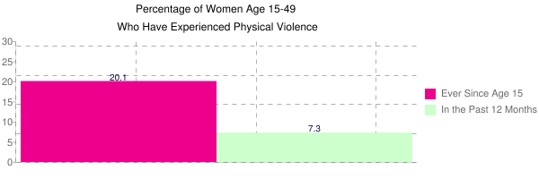
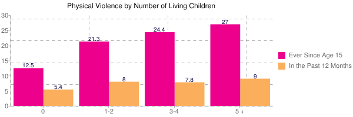
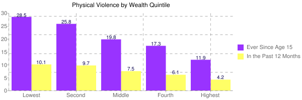
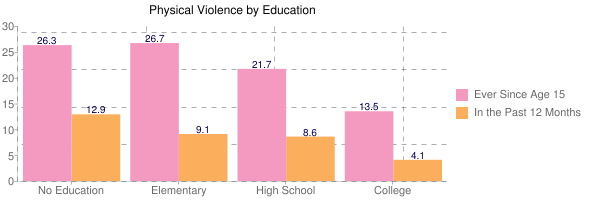
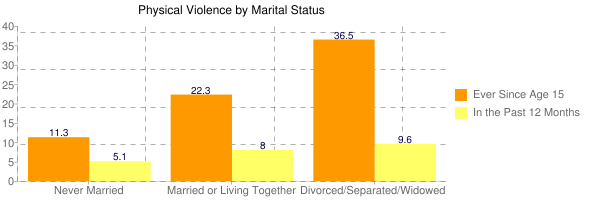
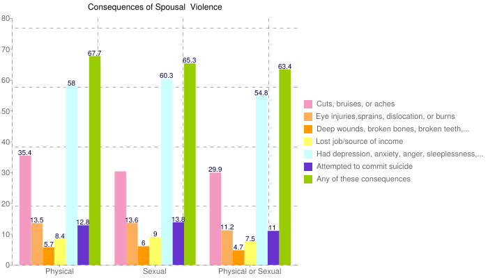
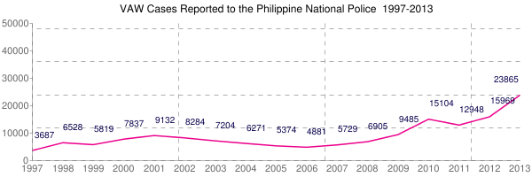
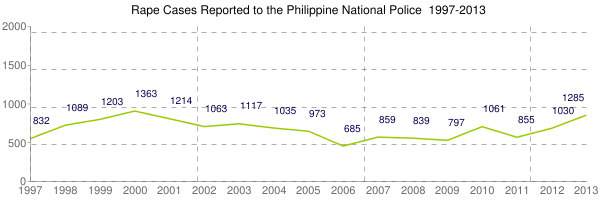
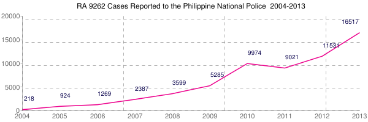
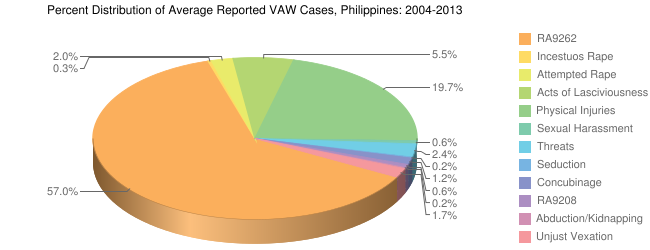

Convention on the Elimination of All Forms of Discrimination against Women
(CEDAW)
The Convention on the Elimination of All Forms of Discrimination against Women (CEDAW) was adopted by the United Nations General Assembly and came into force in 1981.
CEDAW is commonly referred to as the international bill of rights for women. It defines what constitutes discrimination against women and girls and sets out a comprehensive framework for tackling gender inequality.
Article 1 - Definition of ‘discrimination against women’
Discrimination against women includes any distinction, exclusion or restriction made on the basis of sex that has the effect or purpose of impairing or nullifying women’s enjoyment of human rights and fundamental freedoms in the political, economic, social, cultural, civil or any other field. This is irrespective of their marital status, on a basis of equality of men and women.
Article 2 - Duty of States
States agree to pursue by all appropriate means a policy of eliminating discrimination against women, undertaking to take concrete steps to eliminate discriminatory laws, policies and practices in the national legal framework.
Article 3 - Equality
States shall take all appropriate measures to ensure the full development and advancement of women so as to guarantee them the enjoyment of human rights and fundamental freedoms on a basis of equality with men. This is in all fields but in particular the political, social, economic and cultural fields.
Article 4 - Special measures
States are allowed to adopt temporary special measures to accelerate de facto equality for women until the objectives of equality of opportunity and treatment have been achieved. States are allowed to adopt special measures aimed at protecting maternity.
Article 5 - Stereotyping and cultural prejudices
States shall take appropriate measures to eliminate stereotyping, prejudices and discriminatory cultural practices. States shall also ensure that family education includes a proper understanding of maternity as a social function and the recognition of the roles of men and women in the upbringing of their children.
Article 6 - Trafficking and prostitution
States shall take all measures to stop all forms of trafficking and the exploitation of prostitution of women.
Article 8 - Participation at the international level
States shall ensure that women are allowed to represent their governments at the international level and to participate in the work of international organisations.
Article 9 - Nationality
States shall grant women equal rights with men to acquire, change or retain their nationality and also equal rights in respect of their children’s nationality.
Article 10 - Education
States shall ensure that women have equal rights with men in education, including equal access to schools, vocational training, curricula and educational resources. States shall eliminate stereotypes of the roles of women and men through revising school materials and teaching methods.
Article 11 - Employment
States shall ensure that women the same opportunities as men in employment, promotion, training, equal remuneration, social security and safe working conditions. Women must also be protected in respect of pregnancy, maternity and marital status.
Article 12 - Health
States shall ensure that women have equal rights with men to access to health care services, including reproductive health services.
Article 13 - Economic and social benefits
States shall ensure that women have equal rights with men to family benefits, bank loans and other forms of financial credit. Women must also be allowed to participate equally in recreational activities, sports and all aspects of cultural life.
Article 14 - Rural women
States shall take all appropriate measures to eliminate discrimination against women in rural areas so that they can participate in and benefit from health care, education, social security, development planning etc equally with men.
Article 15 - Equality before the law
States shall ensure that women and men are treated equally before the law. Women have the same legal right to enter contracts, own property and choose their place of residence.
Article 16 - Marriage and family life
States shall ensure that women have equal rights with men in relation to marriage and as parents, as well as in respect of other aspects of family life.
Articles 17 - 24
These articles describe the composition and procedures of the CEDAW Committee, the relationship between CEDAW and national and international legislation and the obligation of States to take all steps necessary to implement CEDAW in full.
Articles 25 - 30 - Administration of CEDAW
These articles describe the general administrative procedures concerning enforcement of CEDAW, ratification and entering reservations.
Philippine laws that protect the rights of women
The Philippine Constitution-Article XIII
Section 14. The State shall protect working women by providing safe and healthful working conditions, taking into account their maternal functions, and such facilities and opportunities that will enhance their welfare and enable them to realize their full potential in the service of the nation.
Read MoreRepublic Act 6725
An Act Strengthening the Prohibition on Discrimination Against Women with Respect to Terms and Conditions of Employment, Amending for the Purpose Article One Hundred Thirty-Five of the Labor Code, As Amended
Read MoreRepublic Act 7192
An Act Promoting the Integration of Women as Full and Equal Partners of Men in Development and Nation Building and for Other Purposes.
Read MoreRepublic Act 7322
An Act Increasing Maternity Benefits in Favor of Women Workers in the Private Sector, Amending for the Purpose Section 14-A of Republic Act No. 1161, as Amended and for Other Purposes.
Read MoreRepublic Act 7600
An Act Requiring All Government and Private Health Institutions with Obstetrical Services to Adopt Rooming-in and Breastfeeding Practices and for Other Purposes
Read MoreRepublic Act 7688
An Act Giving Representation to Women in Social Security Commission Amending for the Purpose Section 3(A) of Republic Act 1161, as Amended
Read MoreRepublic Act 8353
An Act known as the “Anti-Rape Law of 1997.” Contains answers to commonly asked questions about the law and rape as a public crime.
Read MoreRepublic Act 8972
An Act providing for benefits and priviledges to solo parents and their children, appropriating funds therefore and for other purposes
Read MoreRepublic Act 9208
An Act to institute policies to eliminate trafficking in persons especially women and children, establishing the necessary institutional mechanisms for protection and support of trafficked persons, providing penalties for its violations and for other.
Read MoreRepublic Act 9262
An Act Defining Violence Against Women and Their Children, providing for protective measures for victims, prescribing penalties therefore, and for other purposes. Otherwise known as the “Anti-Violence Against Women and Their Children Act of 2004”
Read MoreMagna Carta of Women
The Magna Carta of Women is a comprehensive women’s human rights law that seeks to eliminate discrimination against women by recognizing, protecting, fulfilling and promoting the rights of Filipino women, especially those in the marginalized sectors.
Statistics on Violence against Filipino Women (taken from PCW.org)
Physical Violence
The NDHS revealed that one in five women aged 15-49 has experienced physical violence since age 15; 14.4 percent of married women have experienced physical abuse from their husbands; and more than one-third (37%) of separated or widowed women have experienced physical violence, implying that domestic violence could be the reason for separation or annulment.
 Sexual Violence
One in twenty five women age 15-49 who have ever had sex ever experienced forced first sexual intercourse. One in ten women age 15-49 ever experienced sexual violence
Physical Violence during Pregnancy
Overall, 4 percent of women who have ever been pregnant have ever experienced physical violence during pregnancy. The incident increases slightly with number of living children; decreases slightly with age; decreases with education level; and declines steadily with wealth quintile.
Spousal Violence
Emotional and other forms of non-personal violence are the most common types of spousal violence (23% of ever-married women). One in seven ever-married women experienced physical violence by their husbands while 8 percent experienced sexual violence by their husbands. Patterns in prevalence of spousal violence are similar to those of violence experienced by woman 15-49. Most likely higher among separated, widowed and divorced; currently married women who have married more than once; and in CARAGA region, Central Visayas and SOCCSKSARGEN.
Consequences of Spousal Violence
One in three women who experienced physical/sexual violence reported having physical injuries such as cuts, bruises or aches. More than 10 percent reported to have suffered eye injuries, sprains, dislocations or burns, and about the same proportion reported that they attempted to commit suicide. Three in five women who experienced physical/sexual violence reported having experienced psychological consequences like depression, anxiety and anger.
Violence Initiated by Women Against Husbands
Women were asked, "Have you ever hit, slapped, kicked, or done anything else to physically hurt your (last) husband at times when he was not already beating or physically hurting you?". 16 percent answered "Yes, ever" and 9 percent answered "Yes," in the last 12 months.
  VAW Reported to the Philippine National Police
The 2013 report is so far the highest number of reported VAW cases since 1997. The trend, however, is not conclusive of a decreasing or increasing VAW incidence in the country because data are based only from what was reported to PNP. Across a ten-year period from 2004 to 2013, average violations of RA 9262 ranked first at 57 percent among the different VAW categories since its implementation in 2004. Reported cases under RA 9262 continue to increase from 218 in 2004 to 16,517 cases in 2013. Continuous information campaign on the law and its strict implementation may have caused the increasing trend. Since 2004, wife battering cases have been categorized under ‘Violation of RA 9262’ that is, if the victim files a case under such law, otherwise the reported cases will fall under physical injuries category. Physical injury is the second most prevalent case across the ten-year period, accounting for 19.7 percent of all reported VAW cases nationwide. Reported incidence of physical injury has been decreasing in the latter years. Its peak was in 2001 at 5,668 reported cases. The decrease can be partly attributed to the enactment into law of RA 9262 or Anti-VAWC Act of 2004 which penalizes abusive husbands and live-in partners. However, in 2009 and 2010 the reported cases show an increasing trend which slides back in 2011. The trend starts to increase again in 2012 and 2013. Reported rape cases which ranked third accounted for about 8.6 percent of total reported VAW cases from 2004 to 2013. Acts of lasciviousness ranked fourth at an average of 591 reported cases accounting for 5.5 percent of all reported VAW cases from 2004 to 2013. The comparative figures indicate an upward trend of the reported cases after a record low of 358 reported cases in 2007. Among the different regions, Region 6 (Western Visayas) posted the highest reported VAW cases from January to December 2013 with 4,833 reported cases, accounting for 20.3 percent of the total reported VAW cases nationwide. Region 11 (Davao) comes next at 4,411 (18.5%) reported VAW cases followed by Region 7 (Central Visayas) with 3,460 reported VAW cases or 14.5 percent of the total reported VAW cases nationwide. The Autonomous Region of Muslim Mindanao (ARMM) posted the lowest reported VAW cases with 86 cases in 2013.
